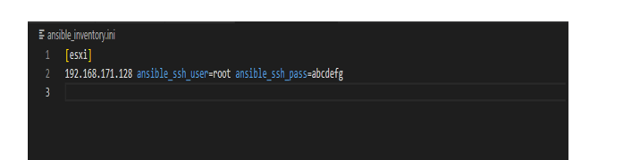

Tutoriels Terraform
Définition
Terraform est l'un des outils d'infrastructure en tant que code (IaC) les plus populaires , utilisé par les équipes DevOps pour automatiser les tâches d'infrastructure. Il est utilisé pour automatiser le provisionnement de vos ressources cloud. Terraform est un outil de provisionnement open source indépendant du cloud développé par HashiCorp et écrit en langage GO.
Langage HCL de TerraformDans le cas de Terraform, le langage utilisé pour définir l’infrastructure est connu sous le nom de HashiCorp Configuration Langage (HCL). L'objectif principal de Terraform est de déclarer des ressources, qui représentent des objets d'infrastructure. Toutes les autres fonctionnalités de son langage permettent de rendre la définition des ressources plus flexible et pratique. Pour le moment nous allons nous concentrer sur la description du workflow de Terraform et l'écriture des fichiers de déclarations.
Cycle de vieLe cycle de vie de Terraform comprend : Write , init , plan , apply et destroy .
- Terraform Write: Vous commencez à écrire votre configuration.
- Terraform init initialise l'environnement Terraform (local). Généralement exécuté une seule fois par session.
- Terraform plan compare l'état Terraform avec l'état tel quel dans le cloud, crée et affiche un plan d'exécution. Cela ne modifie pas le déploiement (lecture seule).
- Terraform apply exécute le plan. Cela modifie potentiellement le déploiement.
- Terraform destroy supprime toutes les ressources régies par cet environnement Terraform spécifique.
La gestion de l'état est un aspect important du workflow de Terraform. L'état de l'infrastructure est stocké dans un fichier d'état, généralement stocké localement ou de manière centralisée via un backend distant. Il est important de gérer cet état avec soin pour assurer la cohérence de l'infrastructure et éviter les conflits. Par défaut cet état est stocké dans un fichier local nommé "terraform.tfstate", mais il peut également être stocké à distance, mais pas dans votre repository git, parce qu'il peut contenir des secrets. Terraform utilise cet état pour créer des plans et apporter des modifications à votre infrastructure. Avant toute opération, Terraform effectue un rafraîchissement pour mettre à jour l'état avec celle de l'infrastructure réelle. Pour gérer ce state, il est possible d'utiliser les workspace et les backends
- Commencez par télécharger la version appropriée de Terraform depuis la page d'installation officielle .
- Une fois le téléchargement terminé, créez un dossier sur votre lecteur C:\ où vous pourrez placer l'exécutable Terraform. Allez ensuite trouver le binaire Terraform dans l'explorateur de fichiers et extrayez ce fichier zip dans le dossier que vous avez créé précédemment :
- Ouvrez votre menu Démarrer et tapez "environnement" et la première chose qui apparaît devrait être "Modifier les variables d'environnement système".
- Cliquez dessus et vous devriez voir cette fenêtre, cliquez ensuite sur le bouton "Variables d'environnement" :
- Dans la section inférieure où il est indiqué "variables système", recherchez la variable nommée "PATH" et cliquez sur modifier :
- Cliquez ensuite sur le bouton "Parcourir" et ajoutez le chemin du dossier où se trouve le binaire terraform.exe :
- Il ne reste plus qu'à vérifier si terraform est installé avec succès sur votre machine Windows, ouvrez votre powershell et lancez la commande suivante :
- Vous devriez avoir le résultat suivant en fonction de la version que vous utilisez :

Prérequis :
- Assurez-vous que vous avez un accès à un serveur VMware ESXi avec les informations de connexion nécessaires (l'adresse IP, le nom d'utilisateur et le mot de passe).
- Assurez-vous d’avoir installé Terraform dans votre ordinateur
- Connaissance du langage HCL. HCL signifie HashiCorp Configuration Language. C'est un langage de configuration développé par HashiCorp, la même société qui a créé Terraform. HCL est conçu spécifiquement pour la configuration d'outils d'infrastructure comme Terraform, Packer, Consul, et d'autres produits de HashiCorp. (vous pouvez l’apprendre sur ce lien https://developer.hashicorp.com/terraform/language )
Étape 1: Configuration du Provider VMware dans Terraform
- Créer un répertoire module dans lequel nous allons placer nos différents codes sources HCL
- Créez un fichier main.tf dans le répertoire module pour définir le fournisseur VMware comme dans la capture d’écran (Remplacer avec vos informations personnelles):
Étape 2: Définir les Machines Virtuelles
- Créez un fichier vms.tf pour définir les machines virtuelles que vous souhaitez créer. Par exemple, pour deux machines virtuelles simples on a le code ci-dessous:
Étape 3: Initialiser et Appliquer les Changements
- Dans le répertoire module, ouvrez un terminal et exécutez la commande suivante :
- En suite exécutez la commande suivante après la fin de l’exécution de la commande précédente
- On obtient le résultat attendu sur vmware ESXi
Dans cette partie nous allons utiliser Ansible. Ansible est une plateforme d'automatisation open source qui permet la gestion de la configuration, le déploiement d'applications, et la gestion des tâches complexes d'administration système. Il simplifie le processus en utilisant des fichiers de configuration déclaratifs, appelés playbooks, qui décrivent les états souhaités d'un système. L’utilisation conjointe de Terraform et Ansible est une approche courante et complémentaire, et elle est souvent recommandée pour automatiser l'ensemble du cycle de vie d'une infrastructure, de sa création à sa configuration. Pour en savoir plus (https://docs.ansible.com/ansible/latest/index.html). Les étapes pour la gestion des machines virtuelles sont les suivantes :
Etape 1 :- Créez un fichier ansible_inventory.ini dans le répertoire module
- Insérez le code suivant (Remplacer avec vos informations personnelles) : 
- Créez un playbook Ansible manage_vms.yml
- Inserez le code ci-dessous
Allumer une VM
Eteindre une VM
Suspendre une VM
Supprimer une VM
Etape 3
- Exécuter la commande :